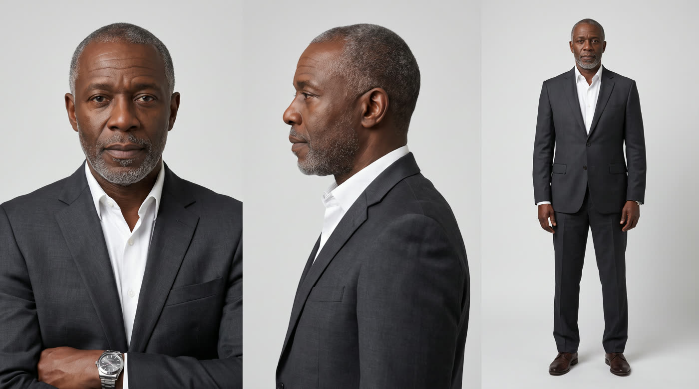
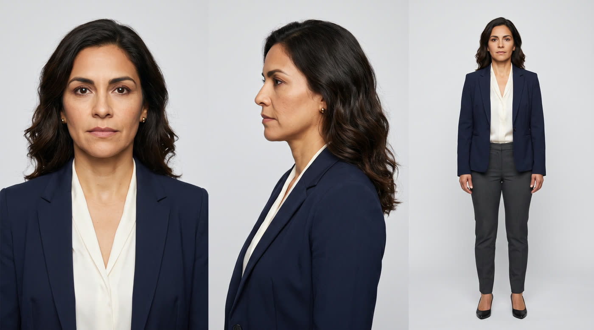
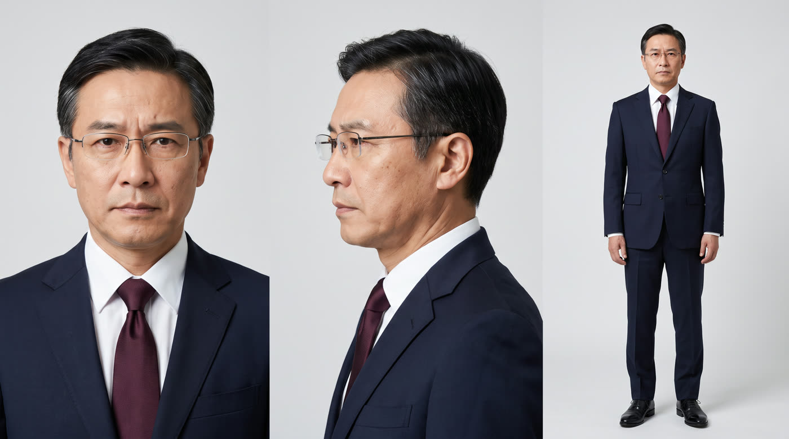
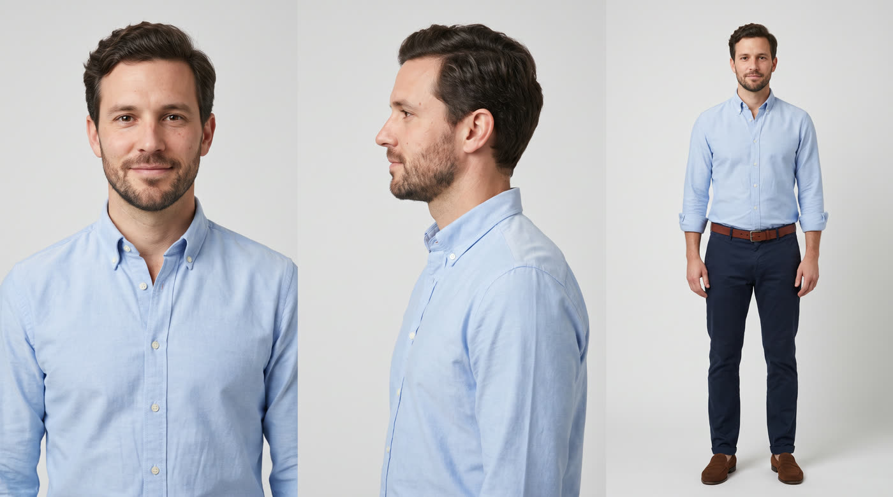

Scenes 1 to 3 as written: the fight, the CEO stuck in the middle, and the CTO's "Ask her." Four synthetic executives, each with one voice, lip-synced, in one boardroom. The wall display was generated blank and the screens were placed in the edit.
What this sample shows
Consistent characters. Each person was built from one reference sheet (below), and every shot was made from those sheets and one boardroom reference.
Dialogue with lip-sync. One AI voice per character, the same in every line. Each speaking shot is animated from its own audio, so the mouth follows the words.
Screen placement. The wall display is generated as a blank panel and held still, so screens can be pinned onto it. The deck slide and the Callie panel here are stand-ins I designed; your finished animations would go in the same place.
Both formats from the same shots. Every shot was framed so a 9:16 crop works too (right). Captions are burned in, and there is a matching .srt.
The approval step from the brief: face front and side, full body and wardrobe for each character, plus the room. All fully synthetic.

Sam · CEO · dark suit, no tie

Rachel · COO · sharp blazer

David · CFO · suit and tie

Eli · CTO · smart casual, no jacketBoardroom · glass walls, city view, wall display
A spec sample made for this application. It isn't affiliated with or approved by DataPhone. All people, voices and numbers are AI-generated or sample data, and the on-screen portal and Callie panel are placeholders, not DataPhone's product.